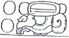
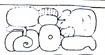
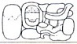
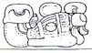

| A1 | Distance Number: 19 K'ins, | |
| B1 | Distance Number continued: 2 Winals (should be 3) | |
| A2 |  | Distance Number continued: 2 Tuns (should be 1) |
| B2 | u-ti-ya "it happened" | |
| C1 | Tzolk'in: 1 Ahaw | |
| D1 | Haab: 8 K'ayab | |
| C2 | 10 K'atun | |
| D2 | Tzolk'in: 11 Kawak | |
| E1 | Haab: 17 Wo |
| F1 |  | LOK-yi?-ti? ??? "he escaped to |
| E2 |  | Balah Chan K'awiil |
| F2 |  | K'uhul Mutul Ahaw "Holy Lord of Mutul" |